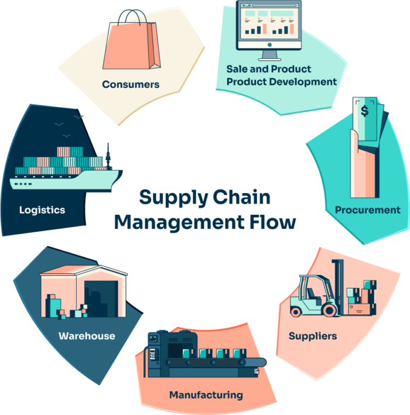
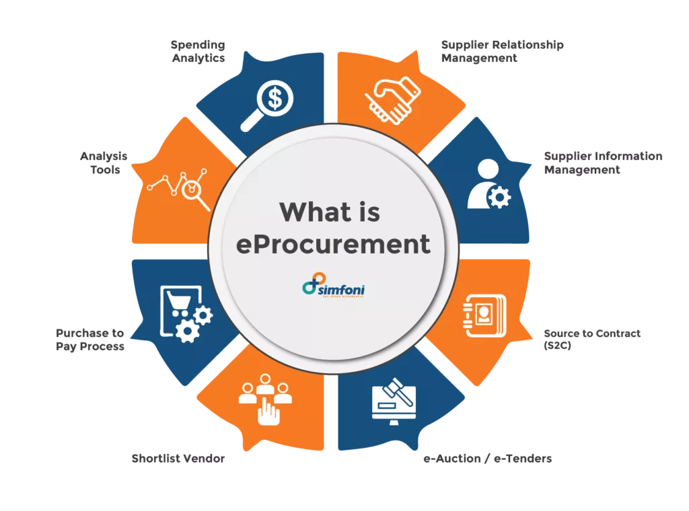
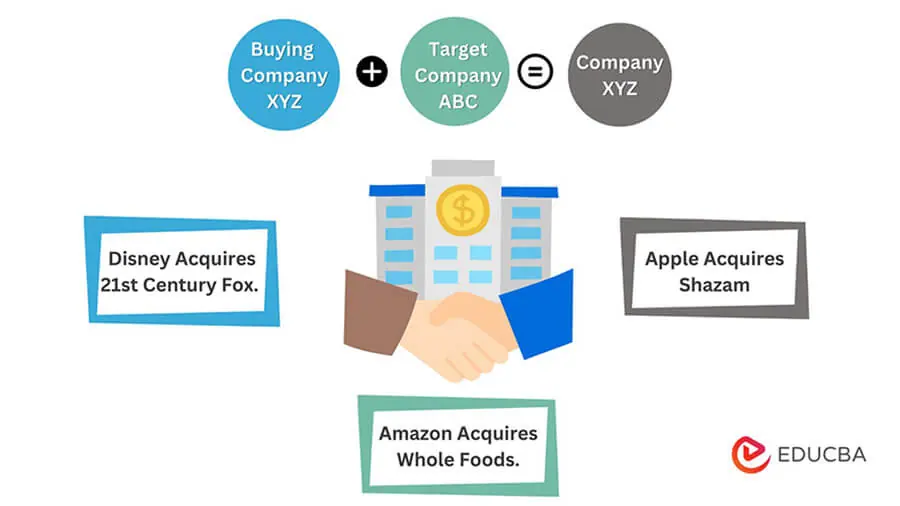

E&E Notes
E-Commerce

E-commerce, short for electronic commerce, refers to the buying and selling of goods and services over the internet. It involves the exchange of data or currency to process a transaction between a buyer and a seller.
E-commerce operates in different forms, and here are the different types of e-commerce:
- Business-to-Consumer (B2C):
- This type of e-commerce involves companies selling their products or services directly to the end-user, the consumer who needs it.
- This is the most common type of e-commerce, and it includes online retailers such as Amazon, Walmart, and Target.
- Business-to-Business (B2B):
- This type of e-commerce involves businesses selling their products or services to other businesses. The buyer often resells the products to the consumer. B2B e-commerce includes companies such as Alibaba, which connects businesses with suppliers.
- Consumer-to-Consumer (C2C):
- This type of e-commerce involves consumers selling products or services to other consumers.
- This type of e-commerce is facilitated by online marketplaces such as eBay, Etsy, and Craigslist.
- Consumer-to-Business (C2B):
- This type of e-commerce involves consumers selling their products or services to businesses.
- This type of e-commerce is common in the freelance industry, where individuals offer their services to businesses that need them.
- Business-to-Government (B2G):
- This type of e-commerce involves businesses selling their products or services to government agencies.
- This type of e-commerce is common in the defense industry, where businesses sell their products to the government.
- Consumer-to-Government (C2G):
- This type of e-commerce involves consumers selling their products or services to government agencies.
- This type of e-commerce is common in the freelance industry, where individuals offer their services to government agencies that need them.
Entrepreneur

- Entrepreneurship promotes capital formation by mobilizing the idle saving of the public.
- It provides immediate large-scale employment. Thus, it helps reduce the unemployment problem in the country, i.e., the root of all socio-economic problems.
- It promotes balanced regional development.
- It helps reduce the concentration of economic power.
- It stimulates the equitable redistribution of wealth, income and even political power in the interest of the country.
- It encourages effective resource mobilization
- of capital and skill which might otherwise remain unutilized and idle.
- It also induces backward and forward linkages which stimulate the process of economic development in the country.
- Last but no means the least, it also promotes country’s export trade i.e., an important ingredient to economic development. Thus, it is clear that entrepreneurship serves as a catalyst of economic development. On the whole, the role of entrepreneurship in economic development of a country can best be put as “an economy is the effect for which entrepreneurship is the cause”.
Supply Chain Management

SRM is a discipline of working collaboratively with those suppliers that are vital to the success of your organization, to maximize the potential value of those relationships.
Supplier relationship management (SRM) is the discipline of strategically planning and managing, all interactions with third party organizations that supply goods or services to an organization in order to maximize the value of those interactions.
Component of SRM

- ORGANIZATIONAL STRUCTURE:
- A formal SRM team or office at the corporate level.
- The purpose of such a group is to facilitate and coordinate SRM activities across functions and business units
- GOVERNANCE:
- The SRM office and supply chain function are typically responsible for defining the SRM governance model, which includes a clear and jointly agreed governance framework in place for some top-tier strategic suppliers.
- SUPPLIER ENGAGEMENT MODEL:
- Effective supplier relationship management requires an enterprise-wide analysis of what activities to engage in with each supplier.
- The common practice of implementing a “one size fits all” approach to managing suppliers can stretch resources and limit the potential value that can be derived from strategic supplier relationships
- VALUE MEASUREMENT
- SRM delivers a competitive advantage by harnessing talent and ideas from key supply partners and translates this into product and service offerings for end customers.
- TECHNOLOGY AND SYSTEMS:
- These systems can be used to gather and track supplier performance data across sites, business units or regions.
- The benefit is a more comprehensive and objective picture of supplier performance, which can be used to make better sourcing decisions, as well as identify and address systemic supplier performance problems.
Evaluating new venture
Venture capitalists use specific criteria to evaluate new venture proposals and decide whether to invest in them.
- Management Skill and History: Venture capitalists look for a strong and experienced management team that can execute the business plan and lead the company to success.
- Market Size/Growth: Venture capitalists expect business plans to include a detailed market size analysis. Market sizing should be presented from the "top down" and from the "bottom up.".
- Rate of Return: Venture capitalists invest in startups with the expectation of a high rate of return.
- Market Niche/Position: Venture capitalists evaluate the business concept and plan to determine if it is innovative and has a competitive edge..
- Financial History: Venture capitalists evaluate the financial history of the startup to determine if it has a clear path to profitability and can generate returns.
- Venture Location: Venture capitalists evaluate the location of the startup to determine if it is in a favorable business environment and has access to resources and talent.
- Growth Potential: Venture capitalists evaluate the growth potential of the startup to determine if it can scale and generate significant revenue and profits in the future.
- Barriers to Entry: Venture capitalists evaluate the barriers to entry in the market to determine if the startup has a competitive advantage and can protect its market position.
- Size of Investment: Venture capitalists evaluate the size of the investment to determine if it is appropriate for the stage of the startup and the potential for returns.
- Stake of Entrepreneur: Venture capitalists evaluate the stake of the entrepreneur to determine if they have a significant interest in the success of the startup and are committed to its growth.
Types of Entrepreneurs
- Business:
- Business entrepreneur
- Trading entrepreneur
- Industrial entrepreneur
- Corporate entrepreneur
- Agricultural entrepreneur
- Motivation
- Pure entrepreneur
- Induced entrepreneur: is attracted by the various incentives, subsidies and facilities offered by the government.
- Technology
- Technical entrepreneur
- Non-technical entrepreneur
- Professional entrepreneur: who interested in floating a business but does not want to manage or operate it.
- Development
- First generation entrepreneur: are those entrepreneur who do not possess any entrepreneurial background.
- Second generation entrepreneur: are those entrepreneurs who inherit the family business firms and pass it from one generation to another.
- Classical entrepreneur: A classical entrepreneur is a stereotype entrepreneur whose aim is to maximize his economic returns at a level consistent with the survival of the unit but with or without an element of growth.
- Capital Ownership:
- Private entrepreneur
- State entrepreneur
- Joint entrepreneur: Joint entrepreneur means the combination of private entrepreneur and state entrepreneur who join hands.
- Scale
- Large scale industry entrepreneur
- Medium scale industry entrepreneur
- Small scale industry entrepreneur
- Tiny industry entrepreneur
- Other
- Solo operators
- Active Partners
- Simply partners
- Inventors
- Buyers
- Life timers
Customer Relationship Management

CRM “is a business strategy that aims to understand, anticipate and manage the needs of an organization's current and potential customers.
CRM is concerned with the creation, development and enhancement of individualized customer relationships with carefully targeted customers and customer groups resulting in maximizing their total customer life-time value.
Types of CRM
Strategic CRM
- Customer-centric, based on acquiring and maintaining profitable customers. Operational CRM
- Based on customer-oriented processes such as selling, marketing, and customer service. Analytical CRM
- Based on the intelligent mining of the customer data and using it tactically for future strategies. Collaborative CRM
- Based on application of technology across organization boundaries with a view to optimize the organization and customers.
Functional areas of CRM:
- Sales Force Automation
- Improve Sales Management
- Accurate Forecasting & Reporting
- Contact Management
- Activity Management
- Opportunity Management
- Marketing Automation
- Customer Journey Automation
- Marketing Funnel Automation
- Automated Email Marketing
- Marketing Campaign Automation
- Customer Service Automation
- Personalized Customer Experiences
- Customer Contact Management
- Improve Customer Relationships
Various financing stage of any organization or company.

- Pre-Seed Funding:
- This is the earliest stage of financing, where the company is often little more than an idea for a product or service that has the potential to develop into a successful business down the road.
- Entrepreneurs spend most of this stage convincing investors that their ideas represent a viable investment opportunity.
- Seed Funding:
- At this stage, the startup will have increased costs as the founder incorporates the business and devotes more time.
- Seed funding is the first official stage of venture capital financing, and it typically involves raising funds from angel investors or venture capitalists.
- Series A Funding
- This stage of financing is typically used to fund the company's initial growth and expansion.
- The company has already launched its product or service and has a proven business model.
- Series B Funding
- This stage of financing is used to fund the company's expansion into new markets or to develop new products.
- The company has already established itself in the market and has a growing customer base.
- Series C Funding:
- This stage of financing is usually the last stage of venture capital financing.
- Businesses in this funding stage are doing well and require additional funding to help develop new products, expand into new markets, or even acquire other companies.
- Expansion Stage Financing:
- This financing follows first-stage financing and provides working capital for the initial expansion of a business that is producing and shipping product and has growing accounts receivable and inventories.
- Initial Public Offering (IPO):
- This is the stage where a company goes public and sells shares of its stock to the public for the first time.
- This stage of financing is typically used to raise a significant amount of capital to fund the company's growth and expansion.
Enterprises based on Ownership structure.
- Sole Proprietorship
- Partnership
- General partnerships
- Limited partnership
- Corporation
- Limited Liability Company
- Private Limited Company
- Public Limited Company
Sole Proprietorship

- A sole proprietorship has only one owner and is an extension of its owner.
- It is not a legal entity and cannot sue or be sued, so creditors/claimants sue the owner

Partnership

General partnerships - a business co-owned by 2 or more general partners
- Default arrangement
- Simplest to form
- Made up of General Partners - a person who has full or shared responsibility for running the business
- General partnerships are most common
- General partners have UNLIMITED LIABILITY Limited partnership - a business co-owned by at least one general partner and one limited partner
- General partners - unlimited liability
- Limited partners - limited liability (only liable for the amount they invested in business)
- Limited partners do not operate business, they provide the capital.

Corporations

Stock
- The shares of ownership of a corporation
- 2 Types: 1) Common Stock (voting privileges) 2) Preferred Stock (no voting rights, dividends paid first) Stockholder (aka Shareholder)
- A person who owns a share or shares of a corporation's stock Dividend
- A portion of the corporation's profit (earnings) that is distributed to stockholders Board of Directors
- The governing body of the corporation, elected by stockholders and appoint corporate officers Closed (private) corporation
- A corporation whose stock is owned by relatively few people and is not sold to the general public Open (public) corporation
- A corporation whose stock is bought and sold on security exchanges and can be purchased by any individual


Limited Liability Company (LLC)

protects its owners from personal responsibility for its debts or liabilities. Limited liability companies are hybrid entities that combine the characteristics of a corporation with those of a partnership or sole proprietorship.
- The limited liability company (LLC) is a corporate structure that protects its owners from being personally pursued for repayment of the company's debts or liabilities.
- Regulation of LLCs varies from state to state.
- Any entity or individual can be a member of an LLC with the notable exceptions of banks and insurance companies.
- LLCs do not pay taxes on their profits directly.
- Their profits and losses are passed through to members, who report them on their individual tax returns.
Private Limited Company
A private limited company is where between one and ninety nine people come together and form a business
The owners are called shareholders and they invest money in the company
The profit is divided up among the shareholders and distributed in the form of dividends
“Ltd.” is written after the name of the company The annual accounts are sent to the Registrar of Companies.
They are not published
Advantages of a Private Limited Company
- Shareholders have limited liability
- Extra capital is available to fund expansion of the business
Continuity of existence
Disadvantages of a Private Limited Company
Costly to set up
A lot of legal requirements when forming a company
Shares cannot be transferred to the general public
Public Limited Company
- A PLC designates a company that has offered shares of stock to the general public.
- The buyers of those shares have limited liability, meaning that they cannot be held responsible for any business losses in excess of the amount they paid for the shares.
- A PLC can be either an unlisted or listed company on the stock exchanges.
Unlike privately-held companies, public companies must publish certain financial data and disclosures for the public at regular intervals.
Advantages and Disadvantages of a PLC
The biggest advantage of forming a public limited company (PLC)is that it grants the ability to raise capital by issuing public shares.
A listing on a public stock exchange attracts interest from hedge funds, mutual funds, and professional traders as well as individual investors.
That tends to lead to increased access to capital for investment in the company than a private limited company can amass.
Non-financial motivational techniques that Entrepreneurs use to motivate their employees
Entrepreneurs can use various non-financial motivational techniques to inspire and engage their employees. Some of these techniques include:
- Delegation: Delegating tasks and empowering employees to work on their own can increase motivation and contribute to self-actualization.
- Job enrichment: This involves increasing the range and complexity of tasks employees are assigned to, which can lead to greater motivation and the opportunity to use their abilities to the fullest.
- Recognition and appreciation: Publicly acknowledging employees' efforts and achievements can boost motivation and satisfaction.
- Mentorship programs: Providing opportunities for employees to learn from experienced colleagues can help them develop essential skills and advance in their careers.
- Leadership roles: Assigning employees to leadership positions can motivate them to put in extra effort and demonstrate their commitment to the organization.
- Creating a great working environment: A conducive work environment, including comfortable chairs, spacious workspaces, and opportunities for relaxation, can positively impact employee motivation.
- Team-building activities: Engaging employees in group activities can foster a sense of camaraderie and improve team dynamics.
- Experiential rewards: Offering benefits such as volunteering, personal projects, and educational workshops can help employees unwind, learn new skills, and support their community.
- Flexible work arrangements: Providing employees with the opportunity to work remotely or adopt flexible schedules can increase motivation and job satisfaction.
- Career development opportunities: Encouraging employees to pursue new skills and advance in their careers can lead to increased motivation and loyalty.
E-Procurement

eProcurement is defined as a digital B2B business process that utilizes internet technology to centralize purchasing workflows and streamlines business transactions like procuring goods and services to reduce costs and improve purchasing processes.
Key features and benefits of e-procurement include:
- Automation: E-procurement helps automate the procurement process, streamlining activities, functions, and procedures, and eliminating manual or paper-based operations.
- Transparency and visibility: It improves transparency and visibility across all procurement processes by enhancing information sharing, tracking spending, and providing real-time budget management.
- Efficiency: E-procurement streamlines the acquisition of goods and services through digital technologies, promoting information sharing, refining data management, and enhancing decision-making, which significantly improves supply chain efficiency and effectiveness.
- Standardization: The goal of e-procurement is to make a company’s procurement operations more standardized, reducing the need for time-consuming manual operations and resulting in considerable cost savings.
E-Procurement chain
E-procurement, also known as electronic procurement, is the process of requisitioning, ordering, and purchasing goods and services online.
It is a business-to-business process that utilizes a supplier's closed system and is only available to registered users.
E-Government

Electronic Government' (or in short 'e-Government') essentially refers to ‘The utilization of Information Technology (IT),Information and Communication Technologies (ICTs), and other web-based telecommunication technologies to improve and/or enhance on the efficiency and effectiveness of service delivery in the public sector.
AIM OF E-GOVERNMENT PROJECT
- Citizen-centered service delivery
- Citizen can access to government's services according to their needs easily
- Saving
- Citizen do not need to go to public institutions
- Security
- Delivering and preserving to related institutions the information that belongs to citizen securely
- Standardization
- No paper waste
- Integration
- Citizens to take a single point of elect. public services
Categories Of e-Government
- The e-government services can be categorized according to the service areas that have the greatest impact and are of the highest value to the consumers.
- In general, these can be organized into following categories
- Government-to-Citizen (G2C)
- Government-to-Business (G2B)
- Government-to-Government (G2G)
- Government-to-Employee (G2E)
1-Government to Citizen (G2C)
- The citizen has a number of relations to the state.
- These include client, customer, voter, subject (to laws and regulations), claimants, beneficiaries, etc.
G2C interactions vary in their level of complexity and in the symmetry of the transaction.
2-Government to Employee (G2E)
It is the online interactions through instantaneous communication tools between government units and their employees
3-Government to Business (G2B)
- Businesses do not vote, but instead, with other relations, they may act as providers to government in instances where government contracts services to businesses or operates in conjunction with them.
- As with G2C, G2B interactions vary in their level of complexity and in the symmetry of the transaction. The same privacy and security concerns shall apply in this area.
4-Government to Government(G2G)
- The relationships between different government institutions may occur at different levels or may even cross from one level to another, like supranational, national, regional and municipal levels.
- As with the exchanges between government and citizens, e-government exchanges between government agencies may be a20 two-way process, where user provides information to trigger the flow of information
E-Commerce
E-commerce, short for electronic commerce, refers to the buying and selling of goods and services over the internet. It involves the exchange of data or currency to process a transaction between a buyer and a seller.
E-commerce operates in different forms, and here are the different types of e-commerce:
- Business-to-Consumer (B2C):
- This type of e-commerce involves companies selling their products or services directly to the end-user, the consumer who needs it.
- This is the most common type of e-commerce, and it includes online retailers such as Amazon, Walmart, and Target.
- Business-to-Business (B2B):
- This type of e-commerce involves businesses selling their products or services to other businesses. The buyer often resells the products to the consumer. B2B e-commerce includes companies such as Alibaba, which connects businesses with suppliers.
- Consumer-to-Consumer (C2C):
- This type of e-commerce involves consumers selling products or services to other consumers.
- This type of e-commerce is facilitated by online marketplaces such as eBay, Etsy, and Craigslist.
- Consumer-to-Business (C2B):
- This type of e-commerce involves consumers selling their products or services to businesses.
- This type of e-commerce is common in the freelance industry, where individuals offer their services to businesses that need them.
- Business-to-Government (B2G):
- This type of e-commerce involves businesses selling their products or services to government agencies.
- This type of e-commerce is common in the defense industry, where businesses sell their products to the government.
- Consumer-to-Government (C2G):
- This type of e-commerce involves consumers selling their products or services to government agencies.
- This type of e-commerce is common in the freelance industry, where individuals offer their services to government agencies that need them.
Acquisition

An acquisition is a deal where one firm buys a fraction of or all stocks of the other organization to gain operational control over it.
Here, the two parties involved are the acquirer and the target company.
An acquisition example would be Disney acquiring 21st Century Fox.
Types of Acquisition

Good Business Plan
A good business plan is a fundamental document that any new business should have in place prior to beginning operations.
It is a roadmap that outlines the company's goals and how it intends to achieve them.
A well-considered and well-written business plan can be of enormous value to a company.
Here are some key components of a good business plan:

- Executive Summary:
- The executive summary is the first section of the business plan and should provide a brief overview of the company, its products or services, and its goals.
- Products and Services:
- This section should provide a detailed description of the company's products or services, including their features, benefits, and unique selling points.
- Marketing Strategy and Analysis:
- This section should describe the company's target market, competition, and marketing strategy.
- Financial Planning:
- This section should include financial projections, such as income statements, balance sheets, and cash flow statements.
- Operations and Management:
- This section should describe the company's organizational structure, management team, and day-to-day operations.
- Market Research:
- This section should provide a detailed analysis of the industry and market in which the company operates.
- Risk Analysis:
- This section should identify potential risks and challenges that the company may face and explain how the company plans to mitigate those risks.
Women Entrepreneur

Women Entrepreneur It may be defined as a woman or group of women who initiate, organize and run a business enterprise.
Government of India has defined women entrepreneurs as owning and controlling an enterprise with a woman having a minimum financial interest of 51% of the capital and giving at least 51% of the employment generated in the enterprise to women.